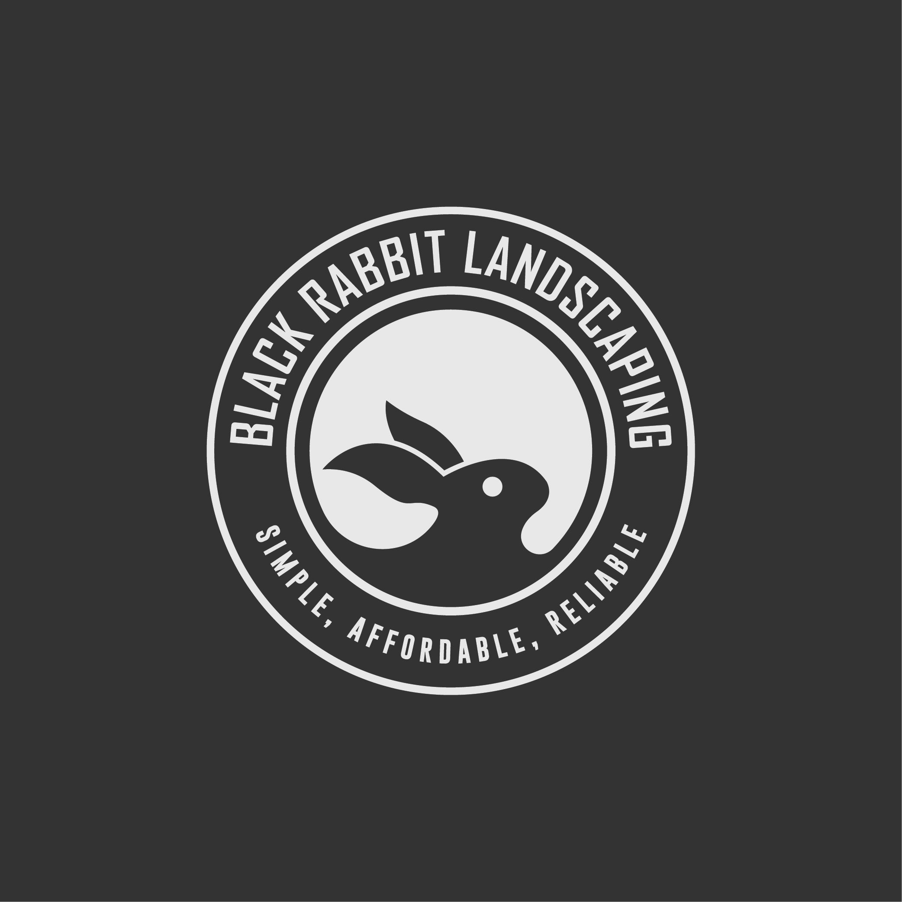

Black Rabbit Landscaping
Yelm • Rainier • Lacey • Roy • Olympia • Thurston County
Black Rabbit is owner-operated lawn care and landscaping for the South Sound. Jerry handles quotes and scheduling directly — simple, affordable, and reliable. We’re fully licensed, bonded, and insured so you can hire with confidence.
Proudly serving Yelm, Rainier, Lacey, Roy, Olympia, Tenino, and greater Thurston County, Washington.
Licensed, bonded, and insured. Call or text (407) 951-1663 or request a free quote online — property address is optional.
Deep pages for the jobs people search most — still owner-operated, still licensed, bonded & insured.
Local pages for the towns we serve most — mowing, edging, cleanups & more.
11 five-star Google reviews from yards across Yelm, Rainier, Lacey, Roy & Thurston County. Read all testimonials.
Straight answers for homeowners looking for local lawn mowing and yard care.
We serve Yelm, Rainier, Lacey, Roy, Olympia, Tenino, and greater Thurston County, WA. Not sure if you’re in range? Call or text and we’ll tell you straight.
Call or text Jerry at (407) 951-1663, or use the quote form below. A property address helps price by yard size, but it’s optional if you’d rather not share it online.
Yes — Black Rabbit Landscaping is fully licensed, bonded, and insured for lawn care and landscaping work in the South Sound.
Weekly & bi-weekly mowing, edging & string trimming, fall & spring cleanups, weed control & mulching, garden bed maintenance, and basic tree & shrub trimming.
Every yard is different. Most regular weekly cuts land around $40–$50 per visit; ballparks run roughly $25–$80 depending on size and condition. Text for a free quote based on your property.
Many jobs fit in the same week, and we try to help with urgent “lawn’s out of control” requests when the calendar allows. Call or text (407) 951-1663 for the soonest opening.
Professional lawn care, gardens & tree services.
Get a fast, no-obligation quote for the Yelm, Rainier, Lacey & Olympia area.
✓ Licensed · Bonded · Insured